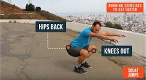

About 4,550,000,000 results (0.45 seconds)
How to Run Faster: 15+ Ways to Pick Up Your Speed | The Run ...
8 Running Tips on How to Get Faster
1.Lose Weight. This is a tricky one to include on this list. ...
2.Focus on Core Strength. ...
3.Optimize Your Breathing. ...
4.Clean Up Your Diet. ...
5.Warm Up to Run Faster. ...
6.Nail Your Form with Pre-Run Drills and Strides. ...
7.Prioritize Recovery and Maintenance. ...
8.Sharpen Your Mental Game to Sharpen Your Speed.
More items...•31 Mar 2023